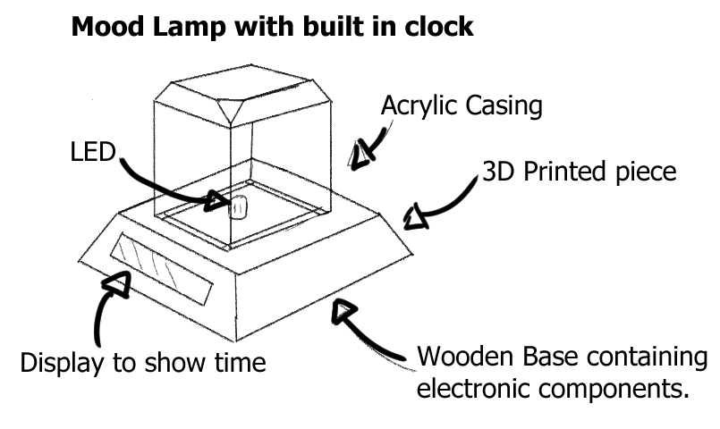

Final Project
The Final Project requires us to come up with an idea and work towards making a physical copy of it, using the various techniques we have learned such as:
- Documentation to record the documentation and record the progression of:
- Ideas - The ideas on what can be made and what purposes the design will serve
- Construction - The construction of the actual project should be documented as it progresses, showing the production of the various components and the assembly of all parts.
- How-do (?)
- Instruction Manual - A user's manual on how to operate the various functions of the project's design.
- CAD and/or Digital Graphic Components
- 2D Cutting and Engraving
- 3D Printed Parts
- Embedded control with a microcontroller with inputs and outputs
Tasklist
- Research possible ideas
- Research more details and look for existing designs that are similar or the same as my ideas. Status: Completed
- Produce Preliminary Sketches
- Preliminary Sketches should be produced for a more visual representation of the project idea. Status: Completed
- Produce Bill of Materials (BOM)
- A bill of materials is used to help identify a total list of items and components that are needed in the prodiction and construction of the project Status: Completed
- Check with lecturers on project scope
- Check with lecturers on the feasability and safety of the scoped project Status: Completed
- Designing CAD model and make any changes if needed.
- Start making or modifying any existing designs to make the needed changes to plan out the production of the final project. Status: Completed
Bill of Materials
- Final Bill of Materials Collected
- This final list is created after simplifying the circuit as much as possible, removing unneccessary components, and changing the board to a Digispark ATTiny85 by choice of the lecturer. In this case, no other power aside from the board's USB connection to a host computer is needed as there are no physical output devices, cutting down on the components needed.
- 1x Digispark ATTiny85 Board
- The Digispark board will serve to collect input from the Rotary Encoder and adjust the volume on the connected computer respectively, and is powered by the USB connection to the computer.
- 1x Rotary Encoder
- The Rotary Encoder is used here as the primary input device.
- 10x Short Dupont Female to Female Jumper Wires
- The cables are used to make the needed connections in the circuit between the board and the rotary encoder.
- Data Transfer Micro USB Cable
- Used to transfer data and input between the board and the computer
- Additional Materials that are not electrical components:
- 3mm thickness plywood, used for lasercutting pieces to form the main housing of the circuit. 3d Printed Knob made for Rotary Encoder
- Bill of Materials V2
- This list is slightly edited after consulting with the lecturer about ways to go about assembly of the project.
- 1x Arduino UNO Board
- The Arduino UNO board is used in place of the Arduino Nano as it is functionally similar to the Nano and the UNO is given to us by default in our kit. This was later replaced by the Digispark.
- 1x Rotary Encoder
- The Rotary Encoder is used here as the primary input device.
- 1x DuPont terminal block pin header 2mm 2 row *5p needle splitter pin header
- This is a power bus that is meant to provide power to the OLED Display. However, it is later removed as the OLED Display is made redundant by the computer screen showing the sound changes in the form of visual feedback.
- 1x 128X64 I2C SSD1306 OLED display
- An OLED Display that was changed from the original due to availability of Fablab. This is later removed as it is made redundant by the computer's visual feedback of volume changes.
- 11x 10cm Male to female jumper wires
- Wires used to make connections between the Power Bus, UNO board, display, and rotary encoder. Later changed to Female Female cables due to the change to the use of a Digispark and the removal of the power bus and OLED Display.
- Additional Materials that are not electrical components:
- 3mm thickness plywood, used for lasercutting pieces to form the main housing of the circuit. 3d Printed Knob made for Rotary Encoder
- Bill of Materials V2
- This list is slightly edited after consulting with the lecturer about ways to go about assembly of the project.
- 1x Arduino UNO Board
- The Arduino UNO board is used in place of the Arduino Nano as it is functionally similar to the Nano and the UNO is given to us by default in our kit. This was later replaced by the Digispark.
- 1x Rotary Encoder
- The Rotary Encoder is used here as the primary input device.
- 1x DuPont terminal block pin header 2mm 2 row *5p needle splitter pin header
- This is a power bus that is meant to provide power to the OLED Display. However, it is later removed as the OLED Display is made redundant by the computer screen showing the sound changes in the form of visual feedback.
- 1x 128x32 I2C OLED display
- The original OLED display intended for use, but changed due to availability of Fablab. This is later removed as it is made redundant by the computer's visual feedback of volume changes.
- WS2812 5050 LED Ring 8-bit
- Used to show visual feedback of change in volume, but removed due to lack of availability and redunduncy.
- 11x 10cm Male to female jumper wires
- Wires used to make connections between the Power Bus, UNO board, display, and rotary encoder. Later changed to Female Female cables due to the change to the use of a Digispark and the removal of the power bus and OLED Display.
- Additional Materials that are not electrical components:
- 3mm thickness plywood, used for lasercutting pieces to form the main housing of the circuit. 1x 3d Printed Knob made for Rotary Encoder 4x M2 10mm Countersink screws for fastening components in place. 6x M2 5mm Screws for fastening components in place. 4x Silicon bumper 2x8mm for fastening components in place.
In preparation for this project, I've done some preliminary research on the ideas I had shortlisted, listed below, along with an evaluation on the feasability of each choice:
- Mood Lamp
- The first idea I had was to make a mood lamp / light based clock, with the light changing based on the time, as shown below.  I had also found a similar project to the idea I had in theory, and it can be found here. However, I rejected the idea for two reasons. The first was that I did not know how to program some of the functions, and I felt that it would be fairly redundant and not serve a practical purpose for most people, as their functions can be replaced by other appliances such as mobile phones.
- Useless Machine
- I had intended to make a useless machine, but I could not find any interesting designs that could accomplish or serve a practical use, hence I scrapped the idea and moved onto looking at interesting parts that I wanted to try working with. However, an example of what I had intended to do can be found here.
- USB Audio Control device
- I found an interesting design that I wanted to try, and found a design that mainly made use of a rotary encoder for all its inputs, managed by an Arduino Nano. It allows the user to switch and cycle through various programs to adjust their audio,
with a visual indicator to the audio level using an OLED display. Below is a sketch.
The idea was heavily inspired by this project by Ruben Henares that uses a program called Maxmix, made for use with Arduino. The official website for its development can be found here. Due to my personal interest in the use of the rotary encoder, this is the first selection of projects I would like to do, followed by the mood lamp, and then the useless machine.